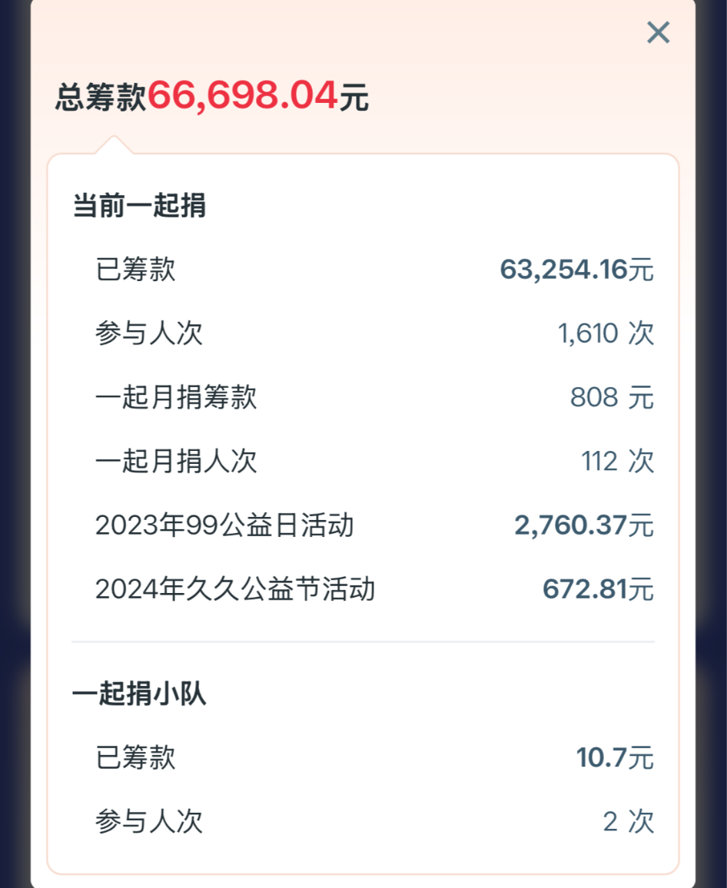
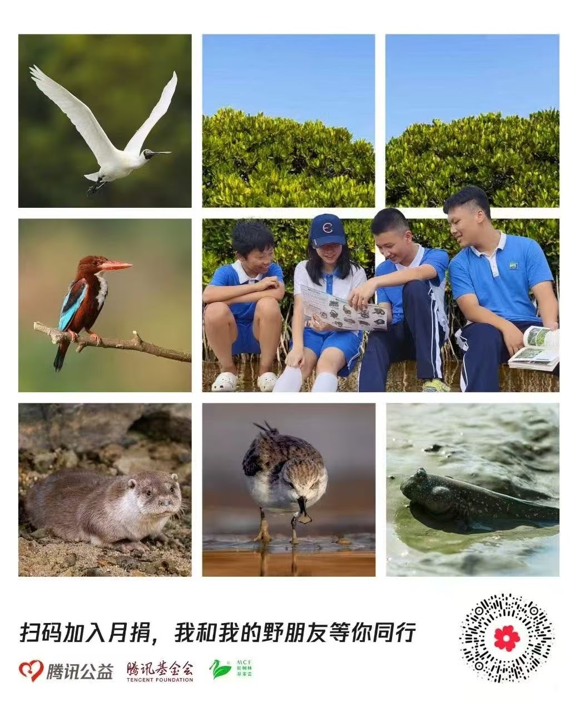
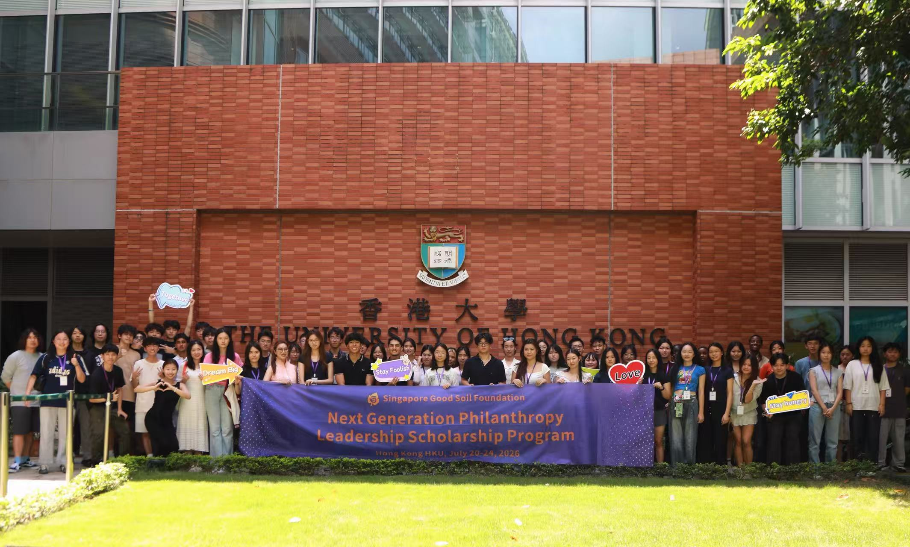
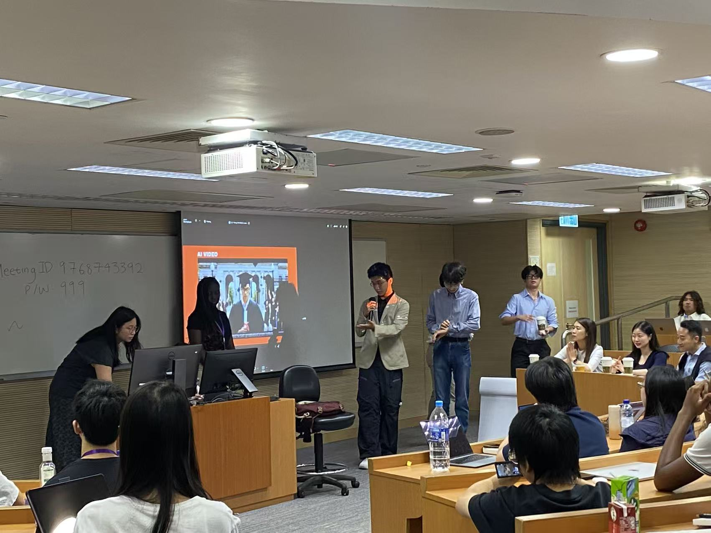

To me, volunteering is more than an act of service. It is a way of awakening ourselves to responsibilities that are easy to overlook.
As modern life becomes increasingly individualistic, we naturally tend to prioritize immediate concerns: time, convenience, personal goals, and measurable rewards. Social responsibility and the greater good can feel distant and abstract. Volunteering offers a way to make those values tangible. When we contribute without expecting anything in return, we create space to notice needs beyond our own.
This belief has shaped the environmental and service projects I have pursued.
Preserving Ancient Trees
As part of a funded research project, I investigated the preservation of protected plants and ancient trees in Shenzhen and submitted my findings to the Nanshan District Bureau of Education.
Shenzhen’s climate should be ideal for the survival of ancient trees. Yet many of these trees are being damaged in the name of protection. Concrete walkways cover their roots, fences restrict access to their trunks, and memorial structures are built so close to them that the trees can no longer grow naturally.
One example was a banyan tree more than two hundred years old. It had witnessed at least four generations of a local village and stood at the center of community life. Another lychee tree, approximately 150 years old, had lost most of its leaves because its roots were trapped beneath concrete and its access to sunlight had been reduced. In another case, a longan tree was slowly dying between the stairs of a memorial—although simply moving the stairs might have saved it.
These trees are not merely natural objects. In southern China, ancient banyans and other large trees are often connected to local history, religious traditions, and community identity. Villages may build shrines beneath them, couples may tie red ribbons to their branches, and residents may regard them as guardians of the community.
My research suggested that the problem was not simply a lack of funding. It was also a lack of understanding. Resources were being used to build fences, walkways, and protective structures, but some of those structures were harming the trees they were meant to protect. Effective conservation requires not only investment, but also a long-term perspective and a deeper understanding of the relationship between people and nature.
Funded report on the preservation of ancient trees


This is my report to the Nanshan District Bureau of Education on the status of protected plants and ancient trees within the region.
Shenzhen Mangrove Foundation
Learning Through Service
I also served as a guide and volunteer with the Shenzhen Mangrove Foundation. Through environmental education, park inspections, and public outreach, I learned that teaching others can sometimes create a more lasting impact than carrying out a single task ourselves.
One experience especially shaped my understanding of volunteering.
During a volunteer activity, a friend noticed that the lid of his soft-drink cup could be recycled separately from the rest of the container. There was no recycling bin nearby, so he walked a considerable distance to dispose of it correctly. He had probably noticed this possibility before, but in everyday life, convenience and time usually take priority. Volunteering temporarily shifted his attention away from those priorities and made another responsibility visible.
He did not become a different person overnight. Instead, he became more aware of a responsibility that had always existed but had often been overlooked. To me, that is one of the most meaningful effects of volunteering: it can awaken a new way of seeing.
Being a guide at the Shenzhen Mangrove Foundation


There is a saying: giving a fish to a starving person is less effective than teaching him how to fish.
In the same amount of time, teaching others how and why preserving nature should be important has a greater impact.
Environmental Fundraising
With my team, Dragons of the Four Seas, I raised funds online to support the removal of invasive mangroves and the restoration of local ecosystems.
The amount of money itself was meaningful, but it was not the most important part of the project. Many contributions were small—sometimes only a few yuan or even a few cents. What mattered was that more than a thousand people chose to give something up for a cause that offered them no immediate personal reward.
The project showed me that social impact is not always measured only by the size of the final result. It can also be measured by the number of people who become willing to act for something beyond themselves.


Service With Hearts
As president of Service With Hearts, I have tried to make volunteering more accessible and more sustainable within my school community.
The club is intentionally small. Rather than organizing as many activities as possible, we focus on building the systems that allow more students to participate effectively. We manage a school-wide volunteer group chat, coordinate communication among students, schools, and community organizations, and develop tools to simplify registration, attendance, and activity management.
Our goal is not simply to complete volunteer hours. It is to help more people develop a lasting sense of responsibility.
Our Projects


Reading Buddies is a program where volunteers visit YuCai 3rd Elementary to provide assistance to students in learning English. This initiative fosters language development and builds confidence among young learners.
NextGen Philanthropists Summer Program
The NextGen Philanthropists summer program introduces young people to philanthropy and social leadership through expert-led sessions, practical activities, and opportunities to develop projects that benefit their communities.


What Volunteering Means to Me
Volunteering is often described as giving time to others. For me, it is also a way of expanding the boundaries of concern—from the individual, to the community, to the natural world.
Human progress has often been driven by goals that seemed impractical in the short term. Space exploration is one example. Going to the moon did not offer an immediate economic return, yet the technologies developed through that effort eventually influenced many aspects of everyday life.
Service works in a similar way. Its value is not always immediate or easily measured. A small donation, a correctly sorted piece of recycling, or a conversation about conservation may seem insignificant on its own. But these actions can change what people notice, what they value, and how they act in the future.
That is why I call this work The Awakening.
Volunteering awakens us to responsibilities that are larger than our own immediate interests. It encourages us to think beyond short-term gains and to recognize that the health of a community, a city, or an ecosystem depends on the choices we make together.